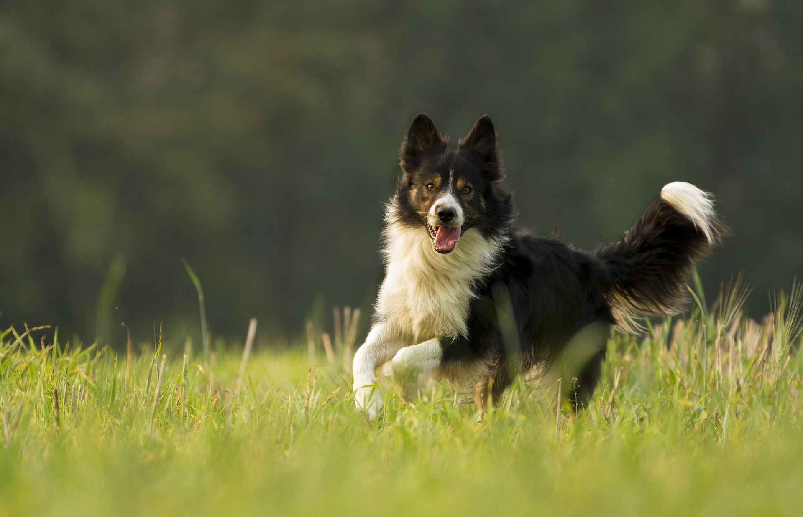
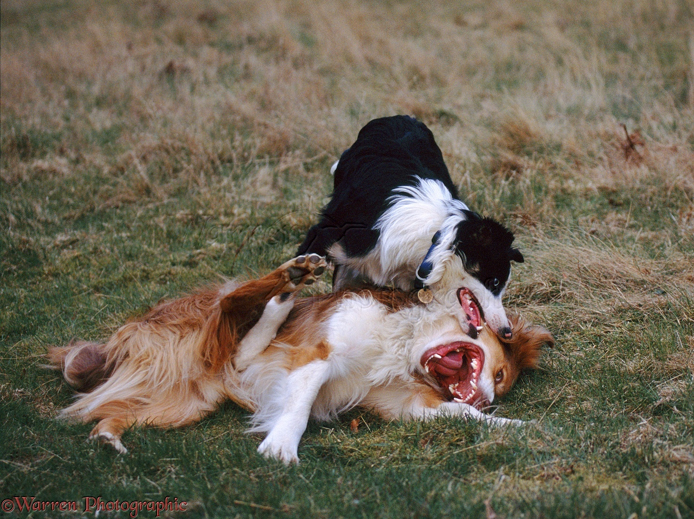

SPRÁVANIE

Border
kólie
sú
veľmi
inteligentné,
priaťelské,
energické.
Nie
je
však
pre
každého!
Človek,
ktorý
ju
chce
mať
by
mal
nejakú
borderku
už
poznať.
Človek
ju
musí
chápať
a
v
každej
siuácií
tolerovať.
Je
to
pes,
ktorý
potrebuje
veľa
pohybu,
práce
a
času
stráveného
s
vami.
Určite
s
vami
nebude
len
ležať
na
gauči
pred
telkou.
Dopredu
treba
myslieť
na
to,
že
ak
aj
máte
veľa
povinností
nemôžete
ho
dať
na
druhé
miesto
a
musíte
mu
vždy
venovať
čas.
V
opačnom
prípade
sa
pes
bude
nudiť
a
môže
to
mať
svoje
následky(pes
bude
ničiť
veci,
trhať
a
obhrýzať).
Ak
sa
psovi
nebudete
dostatočne
venovať
bude
sa
tiež
snažiť
získať
si
vašu
pozornosť
sám
tak,
že
bude
naschvál
robiť
veci,
ktoré
ste
mu
dôrazne
zakázali.
Ak
mu
ale
budete
venovať
čas,
budete
mu
robyť
dôsledný
tréning
a
zažie
s
vami
veľa
zábavy
tak
vás
za
nič
nedá
a
bude
váš
parťák
do
každého
počasia.

Border
kólia
je
aj
výborný
rodinný
pes
za
predpokladu,
že
dostáva
ako
šteňa
dôsledný
a
kvalitný
výcvik
.
Vychádza
s
deťmi
a
domácimi
miláčikmi,
ak
sa
jeho
pastierske
inštinkty
dobre
nasmerujú
a
zakážeme
mu
uplatňovať
ich
v
domácnosti
(šteká
a
naháňa
deti
alebo
domácich
miláčikov).
Ako
u
každého
iného
plemena
musíme
dieťa
upozorniť,
ako
sa
má
správať
k
psovi.
Povedať
mu,
že
ho
nemá
ťahať
za
chvost
alebo
uši,
rušiť
pri
spánku
a
brať
mu
jedlo.
V
týchto
situáciách
nezáleží
na
tom,
ako
je
pes
priateľský,
vždy
bude
nepríjemne
prekvapený
týmto
správaním
dieťaťa
a
na
nás
je,
aby
sme
predvídali
tieto
situácie.
Je
nekonfliktný
aj
voči
cudzím
psom
a
ľuďom.
Ak
potrebujete
k
domu
strážneho
psa
tak
borderka
pre
vás
asi
nebude.
Zlodeja
by
u
vás
skôr
privýtala
ako
odohnala.
Kľudne
sa
nemusíte
vyhýbať
miestam,
kde
je
veľa
psov.
Váš
pes
bude
šťastný
a
možno
si
nájde
aj
nových
priaťeľov
s
ktorími
sa
bude
hrať.
Nemusíte
sa
báť,
ak
psy
nie
sú
na
seba
veľmi
agresívne
v
hre
si
nikdy
neublížia
(aj
keď
to
tak
možno
vyzerá).
Borderke
treba
dopriať
vela
dlhých
vychádzok
do
prírody
a
na
miesta
kde
bude
môcť
slobodne
do
sýtosti
behať.